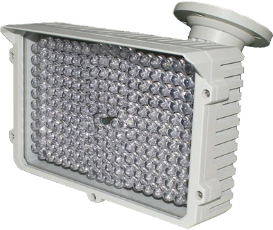
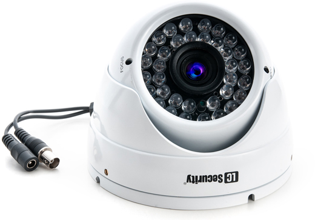
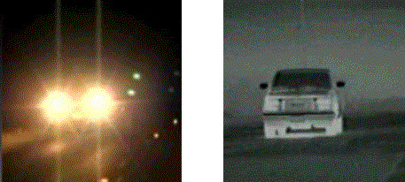

Każdy współczesny system telewizji przemysłowej jest uzależniony od światła. Światło w systemach monitoringu wizyjnego odgrywa fundamentalną rolę, ponieważ to właśnie światło w znaczny sposób wpływa na jakość generowanych przez kamery obrazów. Bez jakiegokolwiek źródła światła żaden system telewizji przemysłowej nie może prawidłowo funkcjonować. To właśnie światło, niezależnie czy jest naturalne, czy też sztuczne sprawia, że świat staje się widzialny, zarówno dla naszych oczu jak i dla kamer wchodzących w skład systemu nadzoru wizyjnego.
Rodzaje oświetlenia w systemach monitoringu
Oprócz naturalnego światła dziennego systemy telewizji przemysłowej dodatkowo korzystają z różnych źródeł światła sztucznego. Oświetlenie sztuczne odgrywa decydującą rolę w monitoringu nocnym. Nocne systemy telewizji przemysłowej przeważnie korzystają ze źródeł światła w postaci: lamp żarowych, lamp wyładowczych, lampy metalowo-halidowe oraz oświetlaczy zbudowanych na bazie diod IRED.
Lampy żarowe- lampy żarowe, w tym również żarówki halogenowe nie są najlepszym sposobem na oświetlenie sceny w nocnym systemie monitoringu. Podstawową wadą tego rozwiązania jest krótka żywotność oraz bardzo duży pobór energii. Typowy pobór mocy w tego rodzaju lampach przeważnie wynosi około 500W! Krótka żywotność lamp żarowych jest nie tylko problematyczna ale także kosztowna. W przypadku systemów pracujących w trybie całodobowym lampy żarowe trzeba średnio wymieniać trzy razy w roku. Obecnie lampy żarowe powoli przechodzą do lamusa. Użytkownicy współczesnych systemów telewizji przemysłowej coraz częściej porzucają to rozwiązanie i przechodzą na inne, trwalsze i bardziej energooszczędne źródła światła (np. oświetlacze wykorzystujące diody LED).
Lampy wyładowcze- pospolicie nazywane świetlówkami to kolejne źródło sztucznego oświetlenia, z którym możemy się spotkać w systemach telewizji przemysłowej. Lampy wyładowcze, ze względów na trudny do wyeliminowania efekt migotania posiadają bardzo ograniczony zakres zastosowań w monitoringu wizyjnym. Co prawda migotanie lampy wyładowczej dla oka ludzkiego pozostaje niezauważalne, to dla kamery negatywnie wpływa na poprawność pracy. Świetlówki cechują się stosunkowo małą mocą, co sprawia, że nie nadają się do zastosowania zewnętrznego i wykorzystywane są jedynie do oświetlania pomieszczeń wewnątrz budynków. Główną wadą tego rozwiązania są duże rozmiary lamp wyładowczych, co znacznie utrudnia reflektorów ogniskujących światło w wąskim kącie promieniowania. Dodatkowo na niekorzyść tego rozwiązania wpływa to, że wykorzystują niebezpieczne dla środowiska materiały np. rtęć. Największą zaletą świetlówek jest ich energooszczędność, która w niektórych przypadkach dochodzi nawet do 40%. Lampy wyładowcze cechują się również długą żywotnością, która w porównaniu z lampami żarowymi jest blisko dziesięciokrotnie większa. Z tego też względu świetlówki należą do najczęściej wykorzystywanych w gospodarstwach domowych źródeł światła.
Lampy metalowo-halidowe - dotychczas nie cieszyły się zbyt dużą popularnością, co wynikało głównie z ich ograniczonego dostępu, wysokiej ceny oraz braku publikacji na temat ich działania. Obecnie lampy metalowo-halidowe cieszą się coraz większym zainteresowaniem wśród projektantów i instalatorów systemów telewizji przemysłowej. Ich sposób działania jest zbliżony do lamp wyładowczych. Głównymi zaletami lamp metalowo-halidowych są: bardzo wysoka sprawność energetyczna (od 60% do 80%), duża żywotność (do 12 tysięcy godzin) oraz prawidłowy rozkład widmowy emitowanego światła. Wszystkie te cechy sprawiają, że jest to bardzo przydatne źródło światła w systemach monitoringu wizyjnego. Lampy metalowo-halidowe generują światło białe o rozkładzie widmowym zapewniającym prawidłową reprodukcję kolorów. Dodatkową zaletą są małe rozmiary, które pozwalają na tworzenie oświetlaczy do kamer.
Oświetlacze zbudowane na bazie diod LED- rozwiązanie, które zdecydowanie najczęściej znajduje zastosowanie we współczesnych systemach telewizji przemysłowej. Jest to również jedna z najprężniej rozwijających się technologii w dziedzinie elektrycznych źródeł światła. Największą zaletą tego rozwiązania jest imponująca sprawność energetyczna i niespotykana dotąd żywotność. Sprawność energetyczna diod LED stosowanych w reflektorach podczerwieni mieści się w zakresie od 80% do 90% (największa dla diod czerwonych). Bezpośrednim następstwem wysokiej sprawności energetycznej jest niski pobór mocy i niewielki wzrost temperatury podczas pracy. Diody LED na bazie których są budowane tego typu oświetlacze są niezwykle tanie w eksploatacji. Pobór mocy pojedynczego punktu świetlnego bardzo rzadko przekracza 100W. Czas bezawaryjnej pracy diody LED może wynosić nawet 10 lat. Do zalet diod LED można również zaliczyć: wysoką stabilność widmową, natychmiastowy rozruch, odporność na wstrząsy i wibracje oraz bardzo wysoka trwałość mechaniczna. Reflektory IRED znajdują szerokie zastosowanie zarówno w wewnętrznych, jak i zewnętrznych systemach telewizji przemysłowej. Zaawansowane oświetlacze IRED posiadają zasięg nawet 200 metrów.
Oświetlacze adaptowalne- oprócz wyżej wymienionych rozwiązań istnieją także bardziej zaawansowane, które pozwalają na znaczną poprawę równomierności sztucznego oświetlania podczas pracy w warunkach nocnych. Jednym z najskuteczniejszych sposobów na zapewnienie równomiernego oświetlenia jest zastosowanie adaptowalnych urządzeń oświetlających, które pozwalają na regulację poziomu oświetlenia w poszczególnych obszarach obserwowanej sceny. Dotychczas oświetlacze adaptowalne nie cieszą się dużą popularnością, co głównie wynika z faktu, że są one objęte zastrzeżeniami patentowymi i niewielu producentów dostarcza tego typu rozwiązania. W przypadku standardowych źródeł światła - niezależnie od ich konstrukcji - mamy do czynienia z intensywnym oświetleniem centralnej części obserwowanej sceny. W miarę oddalania się od środka poziom oświetlenia maleje. Zależność ta nie jest liniowa, gdyż oświetlenie zmniejsza się nieproporcjonalnie do wzrostu odległości od źródła światła.

Promiennik IR LED zasięgu oświetlenia do 130 m
Kamery z wbudowanym reflektorami podczerwieni
Standardowe kamery kolorowe z jakimi mamy styczność na rynku CCTV nie posiadają możliwości prowadzenia obserwacji w zakresie podczerwieni. Wynika to z faktu, że ich konstrukcja zawiera wbudowany filtr podczerwieni, który całkowicie eliminuje wpływ tego pasma na reprodukcję barw. Inaczej mówiąc ?typowe? kamery kolorowe nie nadają się do prowadzenia obserwacji w nocy. Jeżeli chcemy prowadzić obserwację nocna przy pomocy kamery kolorowej, wówczas musi zastosować kamerę typu dzień/noc. Kamery przemysłowe typu dzień/noc nie są wyposażane w filtr wycinający pasmo podczerwieni, jak to ma miejsce w przypadku standardowych kamer pracujących w trybie kolorowym. Brak filtru wycinającego pasmo promieniowania podczerwonego pozwala na zastosowanie reflektorów podczerwieni IRED.

Kamera wandaloodporna z wbudowanym promiennikiem IR LED
Całkowite usunięcie filtra podczerwieni posiada jednak pewne wady. Podczas pracy w normalnym oświetleniu mogą pojawić się problemu związane z balansem bieli, co objawia się nieprawidłową reprodukcją barw. Wbrew pozorom jest to normalny objaw (choć często zgłaszany przez instalatorów jako uszkodzenie kamery), który wynika z braku filtra podczerwieni i kompromisu pomiędzy ceną a jakością reprodukowanego przez kamerę obrazu. W kamerach wyższej jakości filtr podczerwieni jest mechanicznie odsuwany, co eliminuje występowanie problemu związanego z nieprawidłową reprodukcją kolorów.
Kamery termowizyjne
Kamery termowizyjne to urządzenia, które doskonale nadają się do pracy w warunkach nocnych. Główną zaletą kamer termowizyjnych jest bardzo duży zasięg, wynoszący nawet 1000 metrów. Dodatkowo urządzenia wizyjne z tej grupy charakteryzują się również bardzo małym zużyciem energii, niewrażliwość na dym i mgłę oraz brakiem emisji promieniowania. Ze względu na cenę oraz zaawansowaną konstrukcję są stosowane w monitoringu nocnym obiektów rozległych i rozproszonych. Powszechnie wykorzystywane w monitoringu przejść granicznych i terenów portów lotnicznych.

Fot. Z lewej kamera z wbudowanym oświetlaczem IRED, z lewej kamera termowizyjna.
Równomierność oświetlenia
Równomierność oświetlania to bardzo ważny aspekt podczas projektowania systemów monitoringu wizyjnego, które muszą pracować w warunkach nocnych. Optymalna równomierność w oświetleniu obserwowanej sceny jest niezwykle istotna, ponieważ w dużym stopniu wpływa na poziom jakości wytwarzanych przez kamery obrazów. Kamery przemysłowe muszą być przystosowane do pracy przy bardzo dużych kontrastach. Zapewnienie kamerą przemysłowym optymalnych oświetleniowych warunków pracy nie tyle zależy od poziomu natężenia światła, co od jego równomierności. Najlepszym sposobem na osiągnięcie równomierność w oświetleniu obserwowanej sceny jest stosowanie specjalistycznych urządzeń oświetlających (oświetlacze adaptowalne), których konstrukcja umożliwia modyfikację poziomu oświetlenia w poszczególnych fragmentach obserwowanej sceny.